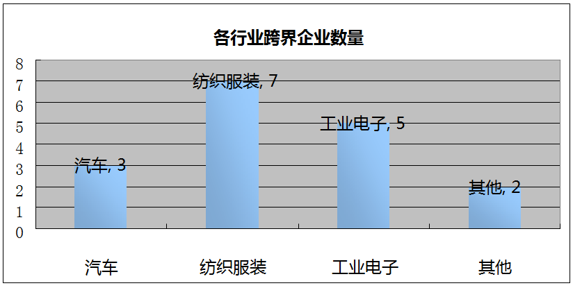
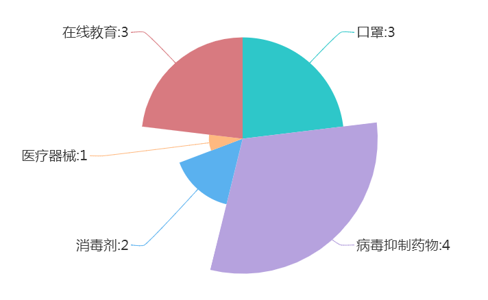
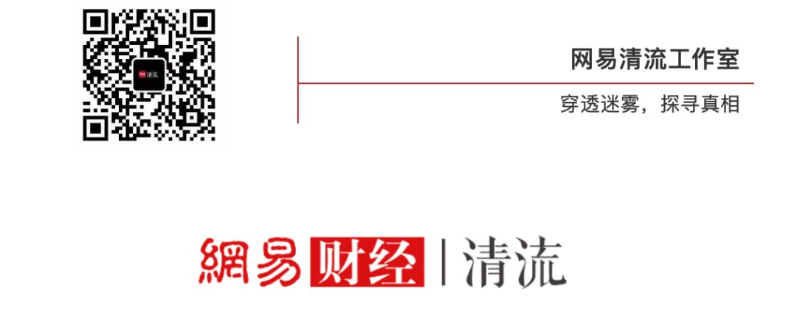

全球口罩总动员：法国和日本的工厂24小时不停工
原文链接 备份链接 来源：图虫 记者：卢奕贝 编辑：牙韩翔 “ 疫情影响之下全球防护设备，尤其是口罩供不应求。这让所有口罩生产商的工厂都开始忙碌起来。 ” 一家名为Kolmi Hopen的公司突然收到了一大笔订单——5亿个口罩。 这家位于 …
▼

作者|翟耀媛
新冠疫情治疗药物尚未明确之下，A股在2月3日新春开市以来，一大批疫情概念股搭上“便车”，跨界经营。其中口罩、消毒剂、医疗器械等概念股集体迎来小高潮，相关个股市值大増。
而在经历数日涨停后，疫情概念股近期纷纷下行降温。清流工作室发现，2月5日以来，多只热门题材个股收到深交所关注函。
上市公司“跨界营业”
疫情爆发至今，不断有上市公司跨界生产疫情防控物资。
以口罩为例，网易清流工作室不完全统计，1月1日至2月14日期间，至少33家A股上市公司跨界生产口罩，主要通过车间转产医用、投资设计医疗器械子公司等方式，投入到口罩产能转化中。

其中几大巨头包括中国石化（600028.SH）、工业富联(601138.SH)等。2月6日，中国石化在其官方微博上发布求助信息：公司有原料熔喷布，亟需口罩机增产口罩抗击疫情。若有富余、可用的设备，可转让给中国石化，公司将协调生产、增产口罩。此外，中国石化本月还将加紧生产近10万吨聚丙烯、合成树脂等医卫原料。
网易清流工作室此前曾接触中石化人员，对方称，中石化将整合各方资源，发挥央企的调动能力，通过购买口罩机、收购口罩商或者帮助口罩商调配原材料、申请医疗资质等方式，尽快帮助口罩商恢复产能。
富士康2月6日表示，集团旗下工业富联近日在集团龙华园区首次导入口罩生产线，并于2月5日顺利实现试产，目前，正在申请产品资质认证中。同时，富士康表示，相关产能预计在2月底可达到日产200万只。
除了口罩这一高频词汇，消毒剂、防护服等疫情刚需也成为行业热点。网易清流工作室不完全统计，1月1日至2月14日期间，加入消毒剂、防护服生产的A股上市公司分别有15家、11家，其中部分企业为应急生产或临时生产。


上述企业中，紫鑫药业（002118.SZ）、陇神戎发（300534.SZ）同时生产口罩、消毒剂、防护服三种设备；延安必康（002411.SZ）同时生产口罩和消毒剂；红豆股份(600400.SH)、搜于特（002503.SZ）、佛慈制药（002644.SZ）、龙头股份（600630.SH）、华纺股份（600448.SH）、华软科技（002453.SZ）和华升股份（600156.SH）共7家公司同时加入口罩和防护服的生产。
股市之外，投入口罩生产的企业数量更是激增。据新京报智库统计，全国只有559个医用口罩类许可证，分别为353家企业所持有。而天眼查统计数据显示，1月1日至2月7日间，超过3000家企业新增了“口罩、防护服、消毒液、测温仪、医疗器械”等经营范围。许多企业“跨界”进入医疗器械行业，零售业、批发业、商业服务、科技推广等都成为热门“跨界“行业。它们当中，注册资本低于100万元的小微企业占比达38%，超过一半的企业注册资本低于500万元。
上市公司中，大幅度“跨界”加入疫情防控设备生产的企业不在少数。2月13日，中顺洁柔全资子公司取得应急医疗器械生产凭证。据网易清流工作室不完全统计，此前，汽车企业上汽集团（600104.SH）、广汽集团（601238.SH）、比亚迪（002594.SZ），纺织服装企业搜于特、华纺股份、龙头股份、红豆股份、水星家纺（603365.SH）、报喜鸟（002154.SZ）、柏堡龙（002776.SZ），工业电子企业中国石化、富士康、长盈精密（300115.SZ）、首航高科（002665.SZ）、赢合科技（300457.SZ）等企业，以及爹地宝贝（834683）和格力地产（600185.SH），累计17家上市公司跨界投入医疗器械生产当中。

多只概念股收“关注函”
在搭上疫情“便车”的路途中，多只个股并非一帆风顺。
网易清流工作室统计，2月5日至2月14日间，深交所共发出13份疫情相关的关注函及问询函，占此期间发函总数的约30%。在这13份函件中，病毒抑制药物相关4份，口罩生产相关3份，消毒剂相关2份，医疗器械相关1份，在线教育相关3份。
值得注意的是，收到问询函的均为在线教育企业。在疫情期间“停课不停学”的影响下，世纪天鸿（300654.SZ）、全通教育（300359.SZ）和方直科技（300235.SZ），均因股价涨幅较大、达到异动标准而收到问询函。

2月5日，深交所针对疫情概念股发出第一份关注函，指向自称生产病毒抑制药物关键中间体的雅本化学（300261.SZ）。关注函显示，雅本化学于2月4日在互动易平台表示，其子公司为药物达芦那韦关键中间体的主要供应商，2月5日公司股价即涨停。深交所要求公司说明是否存在主动迎合市场热点、炒作公司股价的情形。
2月6日，泰和科技（300801.SZ）收到深交所发出的第一份消毒剂相关的关注函。关注函指出，泰和科技公开表示能够生产病毒防疫所用的环境消毒产品，且于2月3日披露拟将过氧乙酸等加入经营范围，2月4日至6日股票连续涨停。深交所要求其说明产品生产条件等信息。
2月8日，正业科技（300410.SZ）公开称，公司正组织N95口罩和平面口罩设备生产，2月10日至12日股价连续涨停。深交所向其发出关注函，要求说明设备具体研发情况、是否存在炒作情形等。
值得注意的是，上述13家收函企业均属于中小企业板和创业板。
而疫情之下，表现出彩的稳健医疗正预备冲击IPO。公司官网显示，1月10日起，稳健医疗黄冈分公司即开始不休假生产N95口罩、外科口罩和护理口罩。自2019年12月20日至2020年1月26日，稳健医疗共向医院、药店、电商供应上亿只口罩，向医院供应11万余件防护服。
今年1月3日，稳健医疗既2005年首次试图上市后，再次冲击IPO，拟登陆创业板。
翟耀媛是清流工作室研究助理，常驻北京。
_网易清流工作室（微信号：wangyiqingliu）出品，未经授权禁止转载。清流工作室是网易财经旗下原创财经调查团队，更多内容欢迎关注微信公众号。_
往期精彩回顾
清流|莆田系医院获赠1.8万口罩背后: 与湖北红会7年间合作7次
黄晓明、林志玲捐的扶贫基金会赠170万口罩？供货商称：不做口罩，从未卖口罩给基金会
湖北脑瘫儿之死：多方曾介入救助 父亲被隔离时想带其入院

原文链接 备份链接 来源：图虫 记者：卢奕贝 编辑：牙韩翔 “ 疫情影响之下全球防护设备，尤其是口罩供不应求。这让所有口罩生产商的工厂都开始忙碌起来。 ” 一家名为Kolmi Hopen的公司突然收到了一大笔订单——5亿个口罩。 这家位于 …
原文链接 备份链接 疫情防控“全国一盘棋”的关键时刻，各地政府应该在用工、原材料、物流等环节最大程度地给口罩企业提供支持，绝对不能画地为牢。 2月11日，工作人员在位于重庆市南岸区的宏冠医疗设备有限公司口罩生产包装车间内作业。作者：王全 …
原文链接 备份链接 以下文章来源于网易财经 ，作者梁耀丹 出品|网易清流工作室 作者|梁耀丹 主编|赵妍 爆料邮箱： stoolpigeon@service.netease.com 假口罩在市场上蔓延。 多位试图通过实体药店、电商平 …
原文链接 备份链接 出品|网易清流工作室 作者|刘亚丹 主编|赵妍 爆料邮箱： stoolpigeon@service.netease.com 没有购销N95资质的口罩供应商，出现在一家基金会供货合同中。不是口罩生产商，曾因医疗器械违规被 …
原文链接 备份链接 _截止到大年初二（1月26日），村里通往外面的路完全封了，只出不进。村里没有多少口罩，疫情开始严重前，镇上就买不到口罩。直到1月22日，从外地做生意归乡的亲人中，还有人根本不知道这次疫情。_ 出品|网易清流工作室 作 …